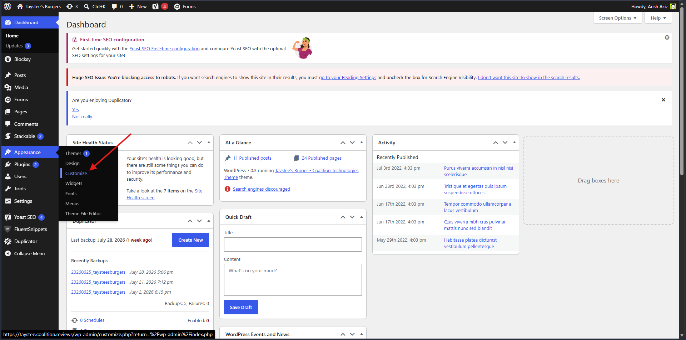

Welcome to Taystee's Burgers theme by Coalition Technologies documentation
Developers info
- Parent theme: Blocksy 2.1.49
- Child theme: blocksy-child (Taystee's Burgers - Coalition Technologies Theme)
- Blocks: Stackable - Gutenberg Blocks
- Forms: Gravity Forms (with reCAPTCHA add-on)
- SEO: Yoast SEO
Custom Sections and Pages
- Menu
- Form
- Wp Blocks
- Useful links - official documentation and support for plugins used
Blocksy Theme Customizer Guide
The Blocksy theme provides a user-friendly WordPress Theme Customizer, allowing you to adjust the appearance and layout of your site in real time. This guide walks through all the main options and best practices.
Accessing the Theme Customizer
- Log in to your WordPress dashboard.
- Navigate to Appearance → Customize.

- The Customizer panel will open on the left, with a live preview on the right.
{kind=link}
Note: Changes are not visible on your site until you click Publish.
Customizer Sections
Here we have all the theme settings:
{kind=link}
Site Identity
- Site Title: Update your site’s name.
- Tagline: Add a short description for your site.
- Logo: Upload your logo image (recommended size: 200x60px).
- Site Icon / Favicon: Upload a 512x512px icon that appears in browser tabs.
Colors & Typography
- Primary & Secondary Colors: Customize theme accent colors.
- Background Color: Set the site background color.
- Font Family & Size: Choose fonts for headings, body, and menus.
- Link Colors: Change link hover and active colors.
Header Options
- Header Settings: Align menus and adjust spacing.
- Sticky Header: Enable a header that stays visible on scroll.
Blog / Archive
- Layout Options: Grid, list, or full-width blog layouts.
- Excerpt Length: Control the number of words displayed per post.
- Featured Image Display: Show or hide thumbnails on the blog page.
Footer Options
- Footer Layout: One, two, or three-column layout.
- Copyright Text: Customize the copyright message.
- Footer Widgets: Enable or disable widget areas.